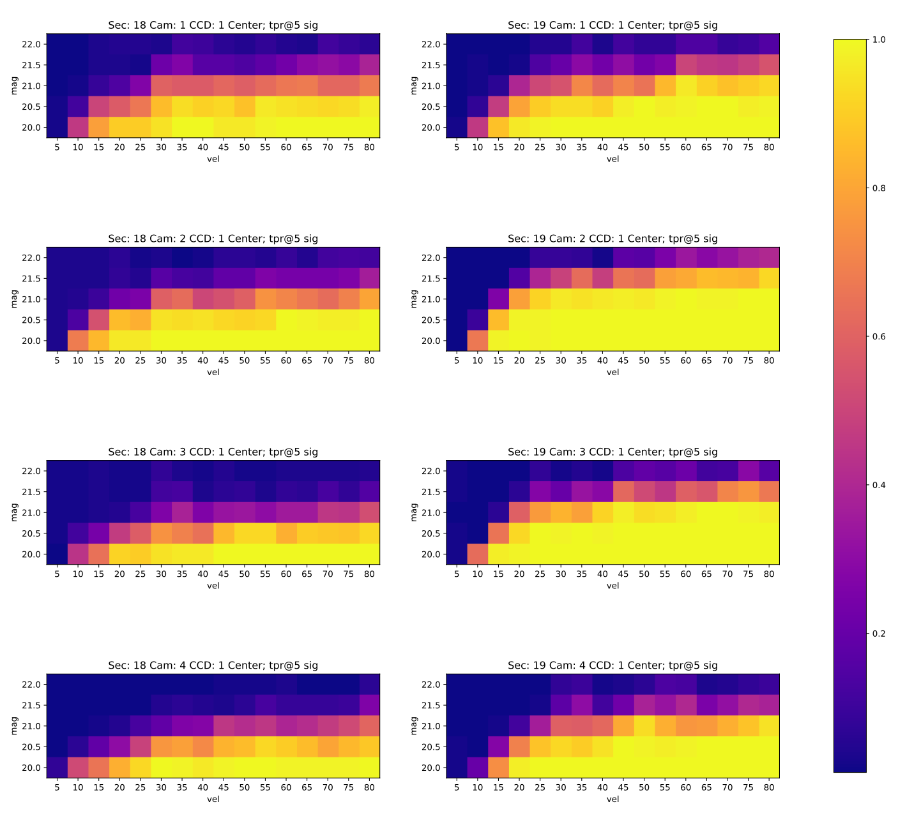
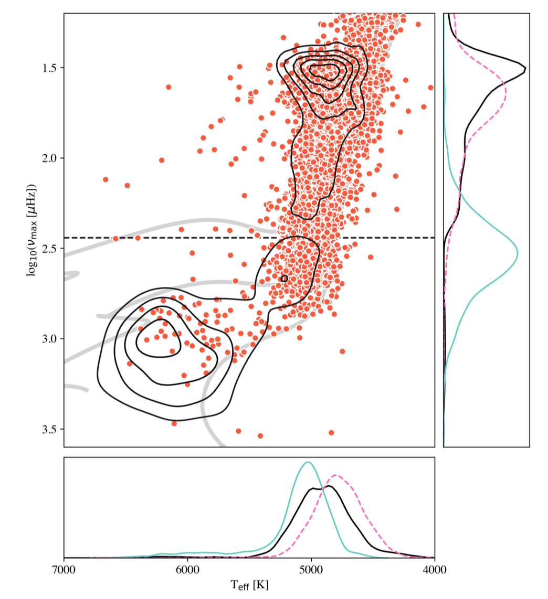
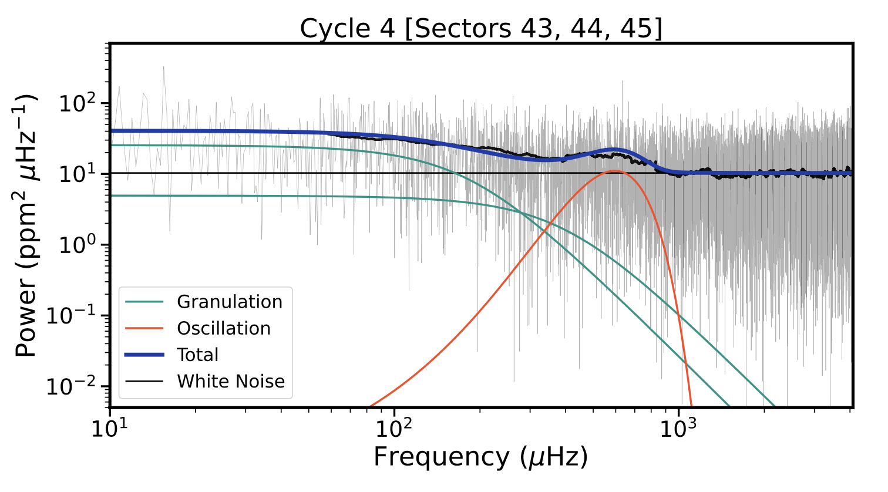

Welcome TESS followers to our latest news bulletin! This week, we are looking at three recent papers from the archive. Enjoy!
Maximum Likelihood Systematic Effect Modeling and Matched Filtering to Detect Trans-Neptunian Objects with TESS (Ganapathi 2022) :
Trans-Neptunian objects (TNOs) are small, faint, primitive bodies in the outer Solar System, that provide important insight into its formation and evolution. While primarily designed as an exoplanet mission, TESS is well-suited to find such objects by capitalizing on the full-frame images it captures. This paper presents a new TNO detection pipeline based on a novel optimization-based framework. Ganapathi (2022) utilizes a matched filter, based on TESS's pixel-response-function, to directly model systematic effects due to scattered light and/or sub-pixel jitter. The algorithm is optimized for graphics processing unit computations, is capable of detecting objects fainter than T = 21 mag at distances of up to 250 AU, and the author notes that is thousands of times faster than previous methods. Ganapathi (2022) demonstrated that the algorithm can automatically recover known TNOs observed in Sector 5 at a high level of confidence, and enables the identification of two TNO candidates by visual inspection.
A Catalogue of Solar-Like Oscillators Observed by TESS in 120-second and 20-second Cadence (Hatt et al., 2022) :
Intrinsic oscillations in Solar-like stars are a powerful tool to determine high-precision stellar masses and size. TESS provides short-cadence observations of a large number of solar-like oscillators, including less evolved stars, and has already made significant contribution in the field. This paper presents new astroseismological analysis of more than 250,000 main sequence and sub-giant stars observed at 20-sec and 120-sec cadence in Sectors 1 through 46. Hatt et al. (2022) applied a novel probabilistic detection algorithm and found solar-like oscillations in 4,177 stars. Of these, 12 are previously-known solar oscillators, 752 are included in the Asteroseismic Target List, and 486 were observed at a 20-sec cadence. The remaining targets are brighter than Ks = 12 mag, have effective temperatures in the range of 4500 K to 6500 K, and were observed at a 120-sec cadence. The authors manually vetted all targets to rule out common sources of false positives such as eclipsing binaries, transiting planets, or classical pulsators. There are 28 spectroscopic binaries, and 28 have confirmed planets. Hatt et al. (2022) also measured the large frequency separation and the frequency at maximum power for 98% of the sample.
Detection of p-mode Oscillations in HD 35833 with NEID and TESS (Gupta et al., 2022) :
HD 35833 is a bright (T = 6.2 mag) G0 subgiant star observed by TESS in Sectors 6, 32, 43, 44, and 45 at a 2-min cadence, and a prime target for detailed asteroseismic investigations. This paper presents a comprehensive analysis of p-mode oscillations in HD 35833, combining the high-precision photometry from TESS with high-resolution radial velocity measurements from the NEID spectrograph. Gupta et al. (2022) achieve clear, independent detection of an oscillation signal in both datasets. From the TESS lightcurves for Sectors 6, 43, 44, and 45, the authors measure a photometric amplitude of about 6 ppm, frequency of maximum power of 595.71 microHz, and mode spacing of 36.65 microHz; from the NEID data, they infer a radial velocity amplitude of about 1 m/sec. Gupta et al. (2022) note that the oscillations amplitudes are smaller than expected, but they could not attribute the discrepancy to known suppression mechanisms. The asteroseismically derived stellar parameters of HD 35833 indicate an effective temperature of Teff = 5684 K, luminosity L = 7.15 LSun, M = 1.42 MSun, and R = 2.76 RSun.

Fig. 1: Taken from Ganapathi et al. (2022). Recovery rate as a function of magnitude and pixel displacement ("vel") for 5-sigma detections.

Fig. 2: Taken from Hatt al. (2022). Asteroseismic HR diagram and nu-Teff distribution for their sample of 4177 stars (orange symbols). The contour lines represent previous measurements from Kepler data, and the horizontal dashed line represents the corresponding long-cadence Nyquist frequency. The grey lines represents MIST isochrones for 1, 1.5 and 2 MSun.

Fig. 3: Taken from Gupta et. al. (2022). Power spectra density for HD 35833 using TESS data from Sectors 43, 44, and 45. The black line represents the boxcar-smoothed power spectrum, and the grey lines represent the fine sampling. The granulation, oscillations, white noise, and the corresponding total contribution are color-coded in green, orange, black, and blue, respectively.